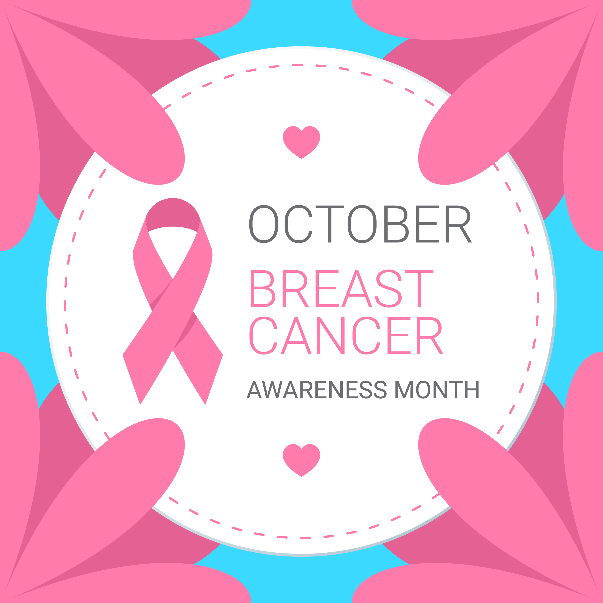

Brest Cancer Awareness
October 1, 2020 By American Cancer Society

How Does Breast Cancer Start?
Changes or mutations in DNA can cause normal breast cells to become cancer. Certain DNA changes are passed on from parents (inherited) and can greatly increase your risk for breast cancer. Other lifestyle-related risk factors, such as what you eat and how much you exercise, can increase your chance of developing breast cancer, but it’s not yet known exactly how some of these risk factors cause normal cells to become cancer. Hormones seem to play a role in many cases of breast cancer, but just how this happens is not fully understood.
How Common Is Breast Cancer?
Breast cancer is the most common cancer in American women, except for skin cancers. Currently, the average risk of a woman in the United States developing breast cancer sometime in her life is about 13%. This means there is a 1 in 8 chance she will develop breast cancer. This also means there is a 7 in 8 chance she will never have the disease.
Breast Cancer Signs and Symptoms
Knowing how your breasts normally look and feel is an important part of breast health. Although having regular screening tests for breast cancer is important, mammograms do not find every breast cancer. This means it's also important for you to be aware of changes in your breasts and to know the signs and symptoms of breast cancer.The most common symptoms of breast cancer are:
- Hard, painless lump or mass with irregular edges
- Tender, soft, round lump or mass
- Skin dimpling (sometimes looking like an orange peel)
- Brest or nipple pain
- Nipple discharge
- Swollen lymph nodes